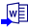

Tutorial: Stapelverarbeitung mit Word-Vorlage zum Erzeugen von Berichten
Der Dialog Word-Lesezeichen zu Analysevorlage hinzufügen wird verwendet, um Lesezeichen aus einer Word-Vorlage zu einer Analysevorlage hinzuzufügen, so dass die stapelverarbeiteten Ergebnisse direkt in die entsprechend mit Lesezeichen versehenen Zellen in der Word-Vorlage zum Erstellen von Berichten ausgegeben werden können.
Um den Dialog Word-Lesezeichen zu Analysevorlage hinzufügen zu öffnen, gehen Sie im Menü auf Datei: Word-Lesezeichen zu Analysevorlage hinzufügen....
Über den Dialog Word-Lesezeichen zu Analysevorlage hinzufügen können Sie Lesezeichen aus einer Word-Vorlage zu einer Analysevorlage hinzufügen. Wenn Lesezeichen zu einer Analysevorlage hinzugefügt wurden, wird ein neues Arbeitsblatt Lesezeichen automatisch erstellt und an die Analysevorlage angehängt. Die hinzugefügten Lesezeichen werden dann nacheinander in der Spalte Lesezeichen (Langname) im Arbeitsblatt Lesezeichen positioniert. Die Spalte Links (Langname) in Lesezeichen wird verwendet, um die entsprechenden Daten-/Diagrammlinks vom Berichtsblatt zu speichern. Die Spalte Diagrammbreite (Langname) wird verwendet, um die Größe der eingefügten Diagramme in Punkteinheiten anzupassen. Der Pfad der verwendeten Word-Vorlage wird an die Beschriftungszeile Word-Vorlage angehängt.
Um einen einmaligen Word-Bericht zu erstellen, können Sie die Datei in das Datenblatt importieren. Wenn die Analyseergebnisse im Blatt Lesezeichen bereit sind, können Sie einfach in der oberen linken Ecke auf die Schaltfläche In Word exportieren  klicken, um ihn zu erstellen.
| Word-Vorlage | Laden Sie eine spezifische Word-Vorlage (.DOCX, .DOCM, .DOC, .DOTX, .DOTM, .DOT) von der Disk. |
|---|---|
| Lesezeichen auswählen |
Lesezeichen
|
| Hinzufügen zu |
Legen Sie die Quelle der Analysevorlagenmappe fest, um Word-Lesezeichen hinzuzufügen.
|
| Analysevorlage | Nur verfügbar, wenn der Modus Hinzufügen zu auf Analysevorlage laden gesetzt wurde. Verwenden Sie diese Option, um die Analysevorlage festzulegen, zu der Word-Lesezeichen hinzugefügt werden. |
|
Tutorial: Stapelverarbeitung mit Word-Vorlage zum Erzeugen von Berichten |